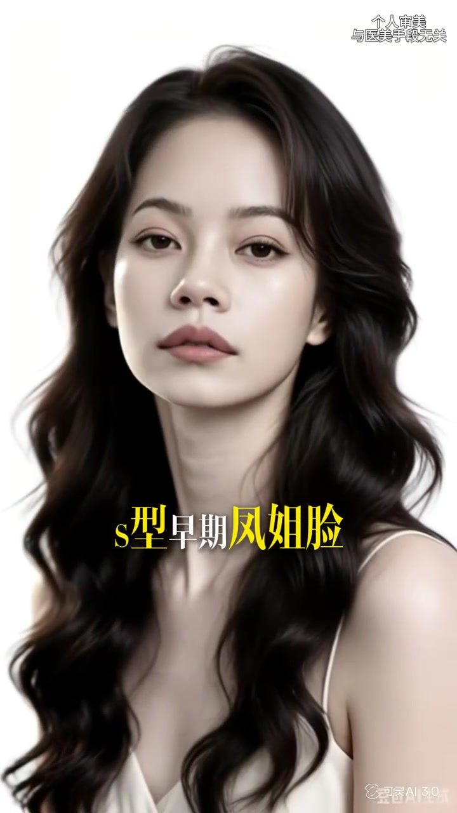
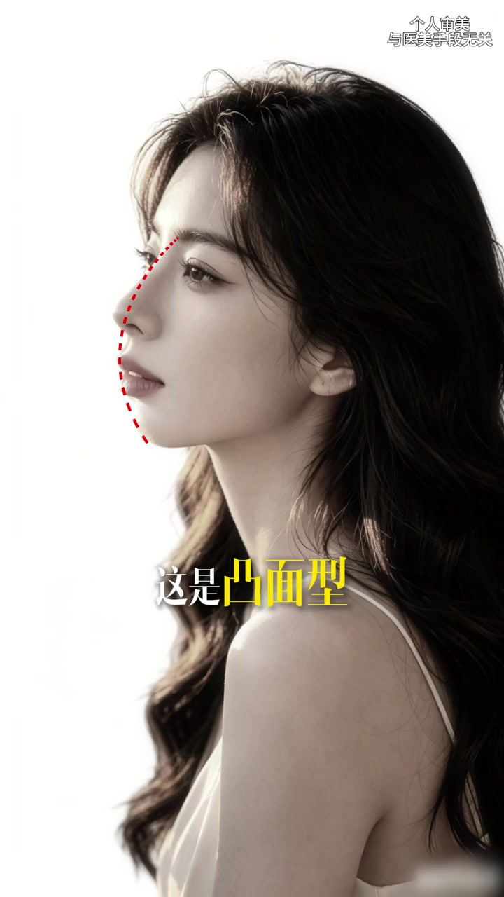

侧脸当尺子，六种面型一口气过完
整片几乎是同款高调白底人像：长卷发、细吊带，侧脸与正脸交替。红虚线反复描在鼻梁—鼻尖—唇—颏的轮廓上，像在教观众「看侧面起伏，不看正脸胖瘦」。话题标签落在变美、do脸、美商、女性智慧、脸型的重要性。语气是口播口号，节奏极快。
画面右上角始终挂着免责声明：「个人审美 与医美手段无关」。部分帧角落还有「豆包AI 3.0」水印——示意图是 AI 生成人像，不是真人病例。
说明：Whisper 把「早期凤姐脸 / 丑到天花板 / 立体端庄 / 明艳贵气 / 憨态有余 / 苦相又土气」等听成「早期奉杰脸 / 喉画天花板 / 立体端桩 / 敏艳贵气 / 憨对犹豫 / 苦相又吐气」。下文以可见字幕与口播语义为准；末尾转录区仍保留原始分段。
第一型：S 型——被点名「最丑」的侧脸起伏
开场大字直接钉标题「这是最丑的面型」。侧脸红虚线从眉鼻一路弯进唇颏，画出明显的 S 形起伏。下一秒叠字换成「S型早期凤姐脸」——把网络语境里的极端侧脸标签压到画面上。
口播把观感推到极端：「丑到天花板」。这是作者个人审美排序的开场，不是测量结论。
画面字幕：「这是最丑的面型」「S型早期凤姐脸」；口播语义：「丑到天花板」

第二型：直面型——立体端庄、标志大气
切到「这是直面型」。红虚线几乎贴着一条更直的侧轮廓，起伏被压平。评价两句口号：立体端庄，标志大气——把直面型放在「端正、大气」的档位。
画面字幕：「这是直面型」「立体端庄」；口播：「直面型立体端庄标志大气」
第三型：微凸面型——明艳贵气、多出港风美女
红虚线开始轻微外拱，「这是微凸面型」上屏。观感标签换成「明艳贵气」，并补一句人群联想：多出港风美女。这里把微凸与港风审美绑在一起，是明确的主观立场。
画面字幕：「这是微凸面型」「明艳贵气」；口播：「多出港风美女」
第四型：凸面型——可爱不足、憨态有余
起伏再加大，画面钉上「这是凸面型」。评价从「贵气」掉到「可爱不足，憨态有余」——同一套侧脸尺子，标签语气突然转向调侃。
画面字幕：「这是凸面型」「可爱不足」；口播语义：「憨态有余」

第五型：微凹面型——东亚人最多，容易出三八脸
节奏切到「这是微凹面型」。正脸叠字先抛统计感口号：「东亚人最多的面型」。紧接着黄字高亮「三八」——「容易出现三八脸」，把泪沟、法令纹、木偶纹一类的横纹焦虑压进微凹叙事。
注意：片中没有给出「微凹」的测量定义，也没有样本量；「最多」是口播断言。
画面字幕：「东亚人最多的面型」「容易出现三八脸」；口播：「这是微凹面型」
第六型：凹面型 / 月亮脸——苦相又土气，很难出美女
收尾定型「这是凹面型」。红虚线向内凹进鼻唇颏，口播补别名「也叫月亮脸」，观感两连击：苦相又土气，很难出美女。整片以最负面的收束句结束，没有自测步骤，也没有妆造或拍摄对策。
画面字幕：「这是凹面型」「很难出美女」；口播：「也叫月亮脸」「苦相又土气」